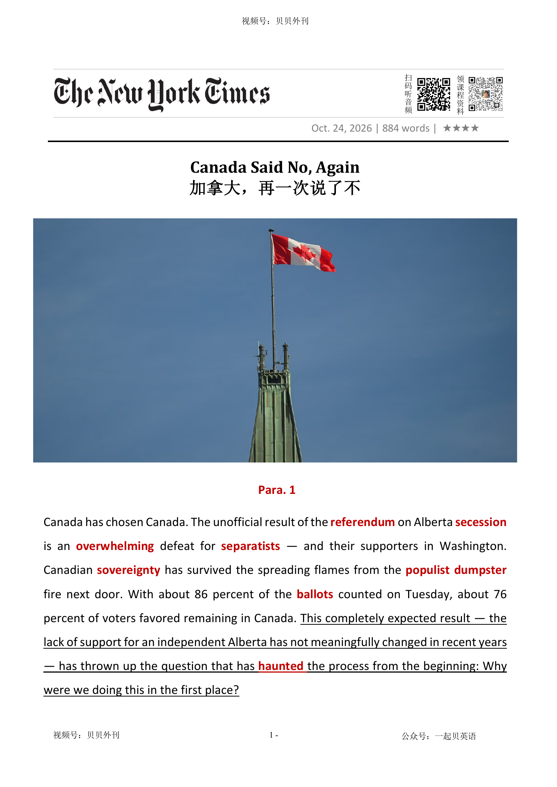

02 HEADLINE / 标题中英文解释
Canada Said No, Again
加拿大，再一次说了不

Canada Said No, Again
加拿大，再一次说了不
文章报道加拿大阿尔伯塔省一场带有分离主义色彩的公投失败，超过四分之三的选民选择留在加拿大，并分析这场政治操作为何反而强化了国家认同。
文章指出，省长 Danielle Smith 推动公投，很大程度上是为了安抚党内极端派并转移自身丑闻压力；但投票并没有提出可执行的独立方案，后来还被法院判定无效。
Smith 一方面宣称支持加拿大统一，另一方面又主动靠近特朗普政府，希望从美国获得政治与经济好处，使联邦派和分离派都怀疑她的真实立场。
文章认为，美国政府把阿尔伯塔的分裂情绪当作介入加拿大内政、削弱加拿大主权的工具，但压倒性的留加结果表明这种策略未能获得民意支持。
后半部分把事件放进民粹政治的常见套路中：地方领导人把治理失败归咎于联邦政府，通过制造怨恨凝聚选票，却很少提出真正可行的政策。
结尾认为，加拿大此次躲过分裂风险，国家主权与团结共识反而得到巩固，也更有条件继续推进相对独立于美国的路线。
The article is about a referendum in Alberta, Canada. More than three quarters of voters chose to stay in Canada.
The result was a clear defeat for the separatist movement and reduced fears that the country could break apart. Alberta’s premier, Danielle Smith, supported the referendum partly to calm the more extreme members of her party and to move attention away from political scandals.
However, the vote did not offer a clear or practical plan for independence. A court later ruled that it was invalid.
Smith says she supports Canadian unity, but she has also tried to build a close relationship with Donald Trump’s government. This has made both sides suspicious of her.
Separatists see her as too loyal to Canada, while federalists think she has encouraged a dangerous movement for her own benefit. The article says the United States tried to use Alberta’s anger as a way to influence Canada.
But the strong vote to remain showed that most people did not support this plan. The main message is that populist leaders often blame the federal government for local problems.
In this case, the tactic failed. Canada’s sense of unity and sovereignty became stronger after the referendum.
阿尔伯塔公投结果与省内困局（Para1-5） ├─ 投票结果：七成多选民选择留在加拿大 ├─ 公投初衷：省长史密斯安抚党内极端派、转移丑闻焦点 └─ 尴尬局面：公投本身无实质独立议题，还被法院判定无效 美国干预的外部博弈（Para6-7） ├─ 省长倾向：主动贴近特朗普政府、寻求美方利好 └─ 美方图谋：将分裂诉求当作插手加拿大的工具 民粹套路与加拿大团结走向（Para8-10） ├─ 惯用手段：把治理失败归咎联邦，靠怨恨政治拉票 ├─ 横向对比：分离支持率和美国本土独立呼声相近 └─ 最终走向：加主权共识巩固，可继续推进自主路线
Canada has chosen Canada. The unofficial result of the referendum全民投票 on Alberta secession脱离 is an overwhelming压倒性的 defeat for separatists独立主义者 — and their supporters in Washington. Canadian sovereignty主权 has survived the spreading flames from the populist民粹主义的 dumpster大型垃圾箱 fire next door. With about 86 percent of the ballots选票 counted on Tuesday, about 76 percent of voters favored remaining in Canada. This completely expected result — the lack of support for an independent Alberta has not meaningfully changed in recent years — has thrown up the question that has haunted出没 the process from the beginning: Why were we doing this in the first place?
加拿大选择了加拿大。阿尔伯塔省脱离加拿大公投的非正式结果显示，分离主义者遭遇惨败，他们在华盛顿的支持者也同样如此。在邻国那场民粹主义的垃圾大火不断蔓延之际，加拿大的国家主权依然经受住了烈焰的侵袭。截至周二，约86%的选票已经完成统计，约76%的选民选择留在加拿大。这一结果完全在意料之中——近年来，阿尔伯塔独立的民意支持不足，并未发生实质性变化。然而，正是这样一个毫无悬念的结果，再次抛出了一个从这场公投酝酿之初便萦绕不去的问题：我们当初究竟为什么要搞这场公投？
The answer seems to be the need of Alberta’s premier首相, Danielle Smith, to assuage缓解 the extremists极端主义者 within her party, the United Conservative Party of Alberta. (Somewhere around half the party supported the separatist cause.) Ms. Smith has claimed that she is “very pleased” with the outcome of the vote — she explicitly campaigned against separation — but the referendum was nevertheless a handy有用的 diversion转移视线的事物 from the corruption and incompetence无能力 scandals that have roiled激荡 her government since she took office in 2022. Albertans paid roughly 130 million Canadian dollars ($92 million) for the distraction分散注意力的事.
答案似乎在于，阿尔伯塔省省长丹妮尔·史密斯需要安抚本党内部的极端派系——阿尔伯塔省联合保守党。（该党内部大约有一半人支持分离主义主张。）史密斯声称自己对投票结果“非常满意”，她本人曾明确反对阿尔伯塔脱离加拿大。但无论如何，这场公投确实成了一个方便的转移视线的工具，让她得以暂时摆脱自2022年上任以来不断困扰其政府的腐败丑闻与执政无能风波。阿尔伯塔民众为这场政治闹剧付出了约1.3亿加元（合9200万美元）的代价。
Even as a sop敷衍性的安抚 to the populist, rage-baiting half of her party, Ms. Smith’s decision to hold the referendum has been a disaster. By trying to please everyone, she has enraged使狂怒 everyone. The question Albertans answered on the ballot in the referendum was not even whether or not to separate. It was about whether to have a second referendum on that question. She no doubt hoped that the delay of an actual decision would allow her grievance委屈-politics base to vent表达 their resentment愤恨 without direct consequences.
即便将这场公投视为向本党内部那群热衷民粹煽动、靠制造愤怒博取关注的人所作的安抚，史密斯的决定也依然是一场灾难。她本想讨好所有人，结果却惹怒了所有人。阿尔伯塔选民在公投中回答的问题，甚至不是该不该脱离加拿大，而是是否应该就这一问题再举行一次公投。史密斯无疑希望，推迟真正作出决定的时间，能够让她那群以怨愤政治为基础的支持者宣泄不满，同时又不必立即承担实际后果。
By one estimate, only a third of voters who said yes on the referendum question favored the idea of an independent Alberta. Their reasons for choosing to support a vote on independence — but not independence itself — included to “get a better deal” on federal-provincial省的 relations and “to send a message” to Ottawa.
据一项估算，在公投问题上投赞成票的选民中，真正支持阿尔伯塔独立的只有三分之一。至于那些支持就独立问题举行投票、却并不赞成独立本身的人，他们的理由包括借此“争取更好的条件”，改善联邦政府与省政府之间的关系，以及“向渥太华传递一个信号”。
In May, an Alberta court declared the referendum to be invalid不承认的, on the basis of its incompatibility不相容 with First Nations rights. That should have been an offramp出口匝道 for Ms. Smith if she were a true friend of Canadian unity, yet she refused to take it. But Ms. Smith’s politics have always been wishy-washy稀里糊涂的. Despite her protestations郑重的声明 in favor of Canadian unity, it remains unclear which side she is on: The separatists despise鄙视 her as an outspoken直率 federalist联邦主义者, and the federalists regard her, at best, as a self-dealing自我交易 fool and, at worst, an outright完全的 traitor背叛者.
今年5月，阿尔伯塔省一家法院裁定，这场公投因与原住民第一民族的权利相冲突而不具合法性。如果史密斯真心维护加拿大的统一，这本该成为她退出的绝佳台阶。然而，她拒绝就此收手。但史密斯的政治立场向来摇摆不定。尽管她一再声称支持加拿大统一，她究竟站在哪一边，至今仍不明朗：分离主义者痛恨她，认为她是一个公开宣扬联邦主义的人；而联邦主义者对她的评价，轻则认为她是一个只顾中饱私囊的蠢人，重则斥她为彻头彻尾的叛徒。
Throughout it all, Ms. Smith has demonstrated clear loyalty to only one faction派系: the Trump administration. In June 2025, she lifted her province’s ban on American alcohol. As anti-Americanism buoyed浮标 the Liberal government in Ottawa, she cozied up to President Trump at Mar-a-Lago, and made an appeal呼吁 to his administration to suspend暂停 tariffs before the last federal election so that the Conservative leader Pierre Poilievre had a better shot尝试 at winning. Mr. Poilievre, she said in an interview, would be “very much in sync, I think, with the new direction in America.”
纵观整个过程，史密斯只对一个阵营表现出的明确的忠诚：那就是特朗普政府。2025年6月，她解除了本省对美国酒类产品的禁令。当反美情绪为渥太华的自由党政府赢得政治声势之际，她却在海湖庄园向特朗普总统巴结讨好。就在上一次联邦大选前，她还向特朗普政府提出请求，希望美方暂停加征关税，以便保守党领袖皮埃尔·普瓦列夫尔能够获得更大的胜选机会。在一次采访中，她表示，普瓦列夫尔的政治主张“我认为会与美国的新方向高度契合”。
American officials have understood the Alberta referendum as a useful tool for their predations捕食 from the beginning. Some separatist leaders have also met with officials at the State Department in Washington to discuss trading oil royalties使用费 and water rights in exchange for U.S. support for Alberta secession. The U.S. Treasury secretary, Scott Bessent, has supported the separatist cause, calling Albertans “very independent people” who would make a “natural partner for the U.S.” He has also described Canada as a “little yipping dog.”
从一开始，美国官员就把阿尔伯塔公投视为一件有利可图的工具。一些分离主义领袖还曾与美国国务院官员在华盛顿会面，讨论以石油特许权收益和水资源权利为交换，换取美国支持阿尔伯塔脱离加拿大。美国财政部长斯科特·贝森特也曾公开支持分离主义阵营，称阿尔伯塔人是“非常独立的一群人”，认为他们会成为“美国天然的合作伙伴”。他甚至还把加拿大贬称为“一只会瞎嚷嚷叫的小狗”。
The question remains whether this referendum is the limit of the populist grievance politics怨愤政治 that Alberta separatism represents. For decades they have run the same play采取同样的策略: Paper over their own administrative管理的 failures by blaming their problems on the federal government in Ottawa. It’s a very convenient strategy. The deeper their incompetence, the more blame is spread on others. That strategy may be reaching an end point, though: In 2021, the Conservatives led the Liberals in Alberta by 40 percent. Recent polls have shown the two parties running neck and neck势均力敌 in the province on a federal level.
问题仍然在于：这场公投是否已经是阿尔伯塔分离主义所代表的民粹怨愤政治的极限？几十年来，他们反复使用的都是同一套伎俩：把自己的施政失败掩盖起来，再将问题一股脑地归咎于渥太华的联邦政府。这实在是一种再方便不过的策略。自己的执政能力越差，甩给别人的锅就越多。不过，这套策略或许正在走向尽头。2021年，保守党在阿尔伯塔省的支持率曾领先自由党40个百分点。而近期民调显示，在联邦层面的政治竞争中，两党在该省的支持率已经不相上下。
Geopolitically, Alberta has been another, admittedly诚然 minor较小的, front前线 in the Trump administration’s predatory捕食性的 foreign policy. As its betrayal of Ukraine has shown, the United States has turned against freedom and democracy the world over. But Canadian democracy has held against the onslaught攻击. The nearly 25 percent pro-separatist vote in Alberta is only about seven percentage points higher than the 18 percent of Americans who want their states to secede退出. It’s roughly the same percentage of Americans who want their states to join Canada, a number that rises to 30 percent for people under the age of 34.
从地缘政治的角度看，阿尔伯塔不过是特朗普政府奉行掠夺性外交政策的又一条战线，诚然只是一条不那么重要的战线。美国对乌克兰的背弃已经表明，这个国家正在背离世界各地的自由与民主。然而，面对这场攻势，加拿大的民主依然屹立不倒。阿尔伯塔省近25%的分离主义支持率，只比希望自己所在州脱离美国的美国人比例18%，高出约7个百分点。与此同时，希望自己的州加入加拿大的美国人，所占比例也大致相同；而在34岁以下的美国人中，这一比例更是高达30%。
Canada has never been more united than it is now. In the Quebec legislative立法的 election this month, the longtime separatist Parti Québécois, while able to form a minority government, failed to reach 30 percent of the vote — the lowest-ever percentage for a winning party in Quebec’s history. With the Alberta referendum behind us把某事抛在身后, the Canadian sovereignty agenda — and its concerted努力的 effort to turn away from the United States politically, economically, militarily, technologically and culturally — can move forward unopposed无人反对. They came for us again. We said no again. Now we can get on with building the country.
加拿大从未像今天这样团结。本月，在魁北克省的议会选举中，长期以来主张分离的魁北克人党虽然成功组建了少数派政府，但得票率未能达到30%，创下魁北克历史上获胜政党得票率的最低纪录。如今，阿尔伯塔公投终于尘埃落定，加拿大捍卫国家主权的议程，以及加拿大做出极大努力与美国拉开距离，在政治、经济、军事、科技和文化等各个领域，终于可以不再受到阻挠，继续向前推进。他们又一次向我们伸出了手。而我们，再一次说了不。现在，是时候继续建设我们自己的国家了。
全民投票；全民公决
an occasion when all the people of a country can vote on an important issue
Ireland decided to hold a referendum on divorce.爱尔兰决定就离婚问题进行全民投票。
The unofficial result of the referendum on Alberta secession is an overwhelming defeat for separatists — and their supporters in Washington.
加拿大选择了加拿大。阿尔伯塔省脱离加拿大公投的非正式结果显示，分离主义者遭遇惨败，他们在华盛顿的支持者也同样如此。在邻国那场民粹主义的垃圾大火不断蔓延之际，加拿大的国家主权依然经受住了烈焰的侵袭。截至周二，约86%的选票已经完成统计，约76%的选民选择留在加拿大。这一结果完全在意料之中——近年来，阿尔伯塔独立的民意支持不足，并未发生实质性变化。然而，正是这样一个毫无悬念的结果，再次抛出了一个从这场公投酝酿之初便萦绕不去的问题：我们当初究…
(从国家或大集团中正式的)脱离
The secession of a region or group from the country or larger group to which it belongs is the action of formally becoming separate.
...the Ukraine's secession from the Soviet Union. ...乌克兰之退出苏联。
The unofficial result of the referendum on Alberta secession is an overwhelming defeat for separatists — and their supporters in Washington.
加拿大选择了加拿大。阿尔伯塔省脱离加拿大公投的非正式结果显示，分离主义者遭遇惨败，他们在华盛顿的支持者也同样如此。在邻国那场民粹主义的垃圾大火不断蔓延之际，加拿大的国家主权依然经受住了烈焰的侵袭。截至周二，约86%的选票已经完成统计，约76%的选民选择留在加拿大。这一结果完全在意料之中——近年来，阿尔伯塔独立的民意支持不足，并未发生实质性变化。然而，正是这样一个毫无悬念的结果，再次抛出了一个从这场公投酝酿之初便萦绕不去的问题：我们当初究…
(数量上) 压倒性的
You can use overwhelming to emphasize that an amount or quantity is much greater than other amounts or quantities.
The overwhelming majority of small businesses go broke within the first twenty-four months. 绝大多数的小公司在最初的24个月里破产。
The unofficial result of the referendum on Alberta secession is an overwhelming defeat for separatists — and their supporters in Washington.
加拿大选择了加拿大。阿尔伯塔省脱离加拿大公投的非正式结果显示，分离主义者遭遇惨败，他们在华盛顿的支持者也同样如此。在邻国那场民粹主义的垃圾大火不断蔓延之际，加拿大的国家主权依然经受住了烈焰的侵袭。截至周二，约86%的选票已经完成统计，约76%的选民选择留在加拿大。这一结果完全在意料之中——近年来，阿尔伯塔独立的民意支持不足，并未发生实质性变化。然而，正是这样一个毫无悬念的结果，再次抛出了一个从这场公投酝酿之初便萦绕不去的问题：我们当初究…
独立主义者
Separatists are people who want their own separate government or are involved in separatist activities.
The army has come under attack by separatists. 军队遭到独立分子的袭击。
The unofficial result of the referendum on Alberta secession is an overwhelming defeat for separatists — and their supporters in Washington.
加拿大选择了加拿大。阿尔伯塔省脱离加拿大公投的非正式结果显示，分离主义者遭遇惨败，他们在华盛顿的支持者也同样如此。在邻国那场民粹主义的垃圾大火不断蔓延之际，加拿大的国家主权依然经受住了烈焰的侵袭。截至周二，约86%的选票已经完成统计，约76%的选民选择留在加拿大。这一结果完全在意料之中——近年来，阿尔伯塔独立的民意支持不足，并未发生实质性变化。然而，正是这样一个毫无悬念的结果，再次抛出了一个从这场公投酝酿之初便萦绕不去的问题：我们当初究…
主权；最高统治权；最高权威
complete power to govern a country
The country claimed sovereignty over the island.那个国家声称对该岛拥有主权。
Canadian sovereignty has survived the spreading flames from the populist dumpster fire next door.
加拿大选择了加拿大。阿尔伯塔省脱离加拿大公投的非正式结果显示，分离主义者遭遇惨败，他们在华盛顿的支持者也同样如此。在邻国那场民粹主义的垃圾大火不断蔓延之际，加拿大的国家主权依然经受住了烈焰的侵袭。截至周二，约86%的选票已经完成统计，约76%的选民选择留在加拿大。这一结果完全在意料之中——近年来，阿尔伯塔独立的民意支持不足，并未发生实质性变化。然而，正是这样一个毫无悬念的结果，再次抛出了一个从这场公投酝酿之初便萦绕不去的问题：我们当初究…
民粹主义的；以代表普通民众利益为主张的（尤指反对既有精英阶层或体制的）
relating to political ideas or movements that claim to represent ordinary people, especially by opposing established elites or institutions
The populist leader promised to tackle rising living costs and protect ordinary workers. 这位民粹主义领导人承诺解决生活成本上涨的问题，并保护普通劳动者的利益。
Canadian sovereignty has survived the spreading flames from the populist dumpster fire next door.
加拿大选择了加拿大。阿尔伯塔省脱离加拿大公投的非正式结果显示，分离主义者遭遇惨败，他们在华盛顿的支持者也同样如此。在邻国那场民粹主义的垃圾大火不断蔓延之际，加拿大的国家主权依然经受住了烈焰的侵袭。截至周二，约86%的选票已经完成统计，约76%的选民选择留在加拿大。这一结果完全在意料之中——近年来，阿尔伯塔独立的民意支持不足，并未发生实质性变化。然而，正是这样一个毫无悬念的结果，再次抛出了一个从这场公投酝酿之初便萦绕不去的问题：我们当初究…
大型垃圾箱；垃圾集装箱
a large metal or plastic container used for collecting rubbish or waste
The workers threw the broken furniture into a dumpster behind the building. 工人们把损坏的家具扔进了大楼后面的大型垃圾箱。
Canadian sovereignty has survived the spreading flames from the populist dumpster fire next door.
加拿大选择了加拿大。阿尔伯塔省脱离加拿大公投的非正式结果显示，分离主义者遭遇惨败，他们在华盛顿的支持者也同样如此。在邻国那场民粹主义的垃圾大火不断蔓延之际，加拿大的国家主权依然经受住了烈焰的侵袭。截至周二，约86%的选票已经完成统计，约76%的选民选择留在加拿大。这一结果完全在意料之中——近年来，阿尔伯塔独立的民意支持不足，并未发生实质性变化。然而，正是这样一个毫无悬念的结果，再次抛出了一个从这场公投酝酿之初便萦绕不去的问题：我们当初究…
选票
the piece of paper on which sb marks who they are voting for
What percentage of eligible voters cast their ballots? 有资格的选民中投票的百分比是多少？
With about 86 percent of the ballots counted on Tuesday, about 76 percent of voters favored remaining in Canada.
加拿大选择了加拿大。阿尔伯塔省脱离加拿大公投的非正式结果显示，分离主义者遭遇惨败，他们在华盛顿的支持者也同样如此。在邻国那场民粹主义的垃圾大火不断蔓延之际，加拿大的国家主权依然经受住了烈焰的侵袭。截至周二，约86%的选票已经完成统计，约76%的选民选择留在加拿大。这一结果完全在意料之中——近年来，阿尔伯塔独立的民意支持不足，并未发生实质性变化。然而，正是这样一个毫无悬念的结果，再次抛出了一个从这场公投酝酿之初便萦绕不去的问题：我们当初究…
（鬼魂）出没
1. if the ghost of a dead person haunts a place, people say that they have seen it there
A headless rider haunts the country lanes.一个无头骑士常出没于乡间的小路上。 2. to continue to cause problems for sb for a long time长期不断地缠扰（某人）
This completely expected result — the lack of support for an independent Alberta has not meaningfully changed in recent years — has thrown up the question that has haunted the process from the beginning: Why were we doing this in the first place?
加拿大选择了加拿大。阿尔伯塔省脱离加拿大公投的非正式结果显示，分离主义者遭遇惨败，他们在华盛顿的支持者也同样如此。在邻国那场民粹主义的垃圾大火不断蔓延之际，加拿大的国家主权依然经受住了烈焰的侵袭。截至周二，约86%的选票已经完成统计，约76%的选民选择留在加拿大。这一结果完全在意料之中——近年来，阿尔伯塔独立的民意支持不足，并未发生实质性变化。然而，正是这样一个毫无悬念的结果，再次抛出了一个从这场公投酝酿之初便萦绕不去的问题：我们当初究…
（尤用于报章等）首相，总理 2. (in Canada) the first minister of a province or territory（加拿大的）省总理，省长
1. used especially in newspapers, etc. to mean ‘prime minister’
The answer seems to be the need of Alberta’s premier, Danielle Smith, to assuage the extremists within her party, the United Conservative Party of Alberta.
答案似乎在于，阿尔伯塔省省长丹妮尔·史密斯需要安抚本党内部的极端派系——阿尔伯塔省联合保守党。（该党内部大约有一半人支持分离主义主张。）史密斯声称自己对投票结果“非常满意”，她本人曾明确反对阿尔伯塔脱离加拿大。但无论如何，这场公投确实成了一个方便的转移视线的工具，让她得以暂时摆脱自2022年上任以来不断困扰其政府的腐败丑闻与执政无能风波。阿尔伯塔民众为这场政治闹剧付出了约1.3亿加元（合9200万美元）的代价。
缓解; 减轻
If you assuage an unpleasant feeling that someone has, you make them feel it less strongly.
To assuage his wife's grief, he took her on a tour of Europe. 为了缓解妻子的悲伤，他带她去欧洲旅游了一趟。
The answer seems to be the need of Alberta’s premier, Danielle Smith, to assuage the extremists within her party, the United Conservative Party of Alberta.
答案似乎在于，阿尔伯塔省省长丹妮尔·史密斯需要安抚本党内部的极端派系——阿尔伯塔省联合保守党。（该党内部大约有一半人支持分离主义主张。）史密斯声称自己对投票结果“非常满意”，她本人曾明确反对阿尔伯塔脱离加拿大。但无论如何，这场公投确实成了一个方便的转移视线的工具，让她得以暂时摆脱自2022年上任以来不断困扰其政府的腐败丑闻与执政无能风波。阿尔伯塔民众为这场政治闹剧付出了约1.3亿加元（合9200万美元）的代价。
极端主义者；极端分子；过激分子
a person whose opinions, especially about religion or politics, are extreme, and who may do things that are violent, illegal, etc. for what they believe
left-wing/right-wing/political/religious extremists 左翼╱右翼╱政治╱宗教极端主义者
The answer seems to be the need of Alberta’s premier, Danielle Smith, to assuage the extremists within her party, the United Conservative Party of Alberta.
答案似乎在于，阿尔伯塔省省长丹妮尔·史密斯需要安抚本党内部的极端派系——阿尔伯塔省联合保守党。（该党内部大约有一半人支持分离主义主张。）史密斯声称自己对投票结果“非常满意”，她本人曾明确反对阿尔伯塔脱离加拿大。但无论如何，这场公投确实成了一个方便的转移视线的工具，让她得以暂时摆脱自2022年上任以来不断困扰其政府的腐败丑闻与执政无能风波。阿尔伯塔民众为这场政治闹剧付出了约1.3亿加元（合9200万美元）的代价。
清楚明白的；易于理解的
clear and easy to understand
He gave me very explicit directions on how to get there.他清楚地向我说明了去那儿的路线。
有用的
Something that is handy is useful.
The book gives handy hints on looking after indoor plants. 这本书提供了关于如何照料室内植物的有用信息。
(Somewhere around half the party supported the separatist cause.) Ms. Smith has claimed that she is “very pleased” with the outcome of the vote — she explicitly campaigned against separation — but the referendum was nevertheless a handy diversion from the corr…
答案似乎在于，阿尔伯塔省省长丹妮尔·史密斯需要安抚本党内部的极端派系——阿尔伯塔省联合保守党。（该党内部大约有一半人支持分离主义主张。）史密斯声称自己对投票结果“非常满意”，她本人曾明确反对阿尔伯塔脱离加拿大。但无论如何，这场公投确实成了一个方便的转移视线的工具，让她得以暂时摆脱自2022年上任以来不断困扰其政府的腐败丑闻与执政无能风波。阿尔伯塔民众为这场政治闹剧付出了约1.3亿加元（合9200万美元）的代价。
转移视线（或注意力）的事物
something that takes your attention away from sb/sth while sth else is happening
For the government, the war was a welcome diversion from the country's economic problems. 政府欢迎这场战争，因为它转移了人们对国家经济问题的注意力。
(Somewhere around half the party supported the separatist cause.) Ms. Smith has claimed that she is “very pleased” with the outcome of the vote — she explicitly campaigned against separation — but the referendum was nevertheless a handy diversion from the corr…
答案似乎在于，阿尔伯塔省省长丹妮尔·史密斯需要安抚本党内部的极端派系——阿尔伯塔省联合保守党。（该党内部大约有一半人支持分离主义主张。）史密斯声称自己对投票结果“非常满意”，她本人曾明确反对阿尔伯塔脱离加拿大。但无论如何，这场公投确实成了一个方便的转移视线的工具，让她得以暂时摆脱自2022年上任以来不断困扰其政府的腐败丑闻与执政无能风波。阿尔伯塔民众为这场政治闹剧付出了约1.3亿加元（合9200万美元）的代价。
无能力；不胜任；不称职
the lack of skill or ability to do your job or a task as it should be done
professional incompetence专业方面不称职
(Somewhere around half the party supported the separatist cause.) Ms. Smith has claimed that she is “very pleased” with the outcome of the vote — she explicitly campaigned against separation — but the referendum was nevertheless a handy diversion from the corr…
答案似乎在于，阿尔伯塔省省长丹妮尔·史密斯需要安抚本党内部的极端派系——阿尔伯塔省联合保守党。（该党内部大约有一半人支持分离主义主张。）史密斯声称自己对投票结果“非常满意”，她本人曾明确反对阿尔伯塔脱离加拿大。但无论如何，这场公投确实成了一个方便的转移视线的工具，让她得以暂时摆脱自2022年上任以来不断困扰其政府的腐败丑闻与执政无能风波。阿尔伯塔民众为这场政治闹剧付出了约1.3亿加元（合9200万美元）的代价。
激荡; 翻腾
1. If water roils, it is rough and disturbed.
The water roiled to his left as he climbed carefully at the edge of the waterfall.
(Somewhere around half the party supported the separatist cause.) Ms. Smith has claimed that she is “very pleased” with the outcome of the vote — she explicitly campaigned against separation — but the referendum was nevertheless a handy diversion from the corr…
答案似乎在于，阿尔伯塔省省长丹妮尔·史密斯需要安抚本党内部的极端派系——阿尔伯塔省联合保守党。（该党内部大约有一半人支持分离主义主张。）史密斯声称自己对投票结果“非常满意”，她本人曾明确反对阿尔伯塔脱离加拿大。但无论如何，这场公投确实成了一个方便的转移视线的工具，让她得以暂时摆脱自2022年上任以来不断困扰其政府的腐败丑闻与执政无能风波。阿尔伯塔民众为这场政治闹剧付出了约1.3亿加元（合9200万美元）的代价。
分散注意力的事；使人分心的事
a thing that takes your attention away from what you are doing or thinking about
I find it hard to work at home because there are too many distractions. 我发觉在家里工作很难，因为使人分心的事太多。
Albertans paid roughly 130 million Canadian dollars ($92 million) for the distraction.
答案似乎在于，阿尔伯塔省省长丹妮尔·史密斯需要安抚本党内部的极端派系——阿尔伯塔省联合保守党。（该党内部大约有一半人支持分离主义主张。）史密斯声称自己对投票结果“非常满意”，她本人曾明确反对阿尔伯塔脱离加拿大。但无论如何，这场公投确实成了一个方便的转移视线的工具，让她得以暂时摆脱自2022年上任以来不断困扰其政府的腐败丑闻与执政无能风波。阿尔伯塔民众为这场政治闹剧付出了约1.3亿加元（合9200万美元）的代价。
敷衍性的安抚；收买人心的小恩小惠；息事宁人的举措
something given or done to satisfy someone or make them less angry, especially when it is intended to prevent further complaints rather than solve the real problem
The government’s small tax cut was seen as a sop to voters rather than a serious attempt to ease the cost-of-living crisis.政府的小幅减税被视为安抚选民的举措，而非真正缓解生活成本危机的努力。
Even as a sop to the populist, rage-baiting half of her party, Ms. Smith’s decision to hold the referendum has been a disaster.
即便将这场公投视为向本党内部那群热衷民粹煽动、靠制造愤怒博取关注的人所作的安抚，史密斯的决定也依然是一场灾难。她本想讨好所有人，结果却惹怒了所有人。阿尔伯塔选民在公投中回答的问题，甚至不是该不该脱离加拿大，而是是否应该就这一问题再举行一次公投。史密斯无疑希望，推迟真正作出决定的时间，能够让她那群以怨愤政治为基础的支持者宣泄不满，同时又不必立即承担实际后果。
愤怒诱饵；故意激怒受众以博取关注、增加互动的网络内容
online content deliberately designed to provoke anger or outrage in order to attract attention and increase engagement
The influencer posted rage bait to generate more clicks and comments. 这位网红发布了故意激怒受众的内容，以获取更多点击量和评论。
使狂怒
If you are enraged by something, it makes you extremely angry.
Many were enraged by the discriminatory practice. 很多人被这种歧视性的做法激怒了。
By trying to please everyone, she has enraged everyone.
即便将这场公投视为向本党内部那群热衷民粹煽动、靠制造愤怒博取关注的人所作的安抚，史密斯的决定也依然是一场灾难。她本想讨好所有人，结果却惹怒了所有人。阿尔伯塔选民在公投中回答的问题，甚至不是该不该脱离加拿大，而是是否应该就这一问题再举行一次公投。史密斯无疑希望，推迟真正作出决定的时间，能够让她那群以怨愤政治为基础的支持者宣泄不满，同时又不必立即承担实际后果。
委屈；抱怨；牢骚
something that you think is unfair and that you complain or protest about
He had been nursing a grievance against his boss for months.他几个月来一直对老板心怀不满。
She no doubt hoped that the delay of an actual decision would allow her grievance-politics base to vent their resentment without direct consequences.
即便将这场公投视为向本党内部那群热衷民粹煽动、靠制造愤怒博取关注的人所作的安抚，史密斯的决定也依然是一场灾难。她本想讨好所有人，结果却惹怒了所有人。阿尔伯塔选民在公投中回答的问题，甚至不是该不该脱离加拿大，而是是否应该就这一问题再举行一次公投。史密斯无疑希望，推迟真正作出决定的时间，能够让她那群以怨愤政治为基础的支持者宣泄不满，同时又不必立即承担实际后果。
怨愤政治；不满政治，即通过强调人们受到不公正对待的感受、怨恨情绪或对政府及其他群体的不满来争取支持的政治方式
a style of politics that gains support by emphasizing people's feelings of unfair treatment, resentment, or dissatisfaction with the government or other groups
The candidate built his campaign around grievance politics, blaming political elites for ordinary people's problems.这位候选人围绕怨愤政治展开竞选，将普通民众面临的问题归咎于政治精英。
The question remains whether this referendum is the limit of the populist grievance politics that Alberta separatism represents.
问题仍然在于：这场公投是否已经是阿尔伯塔分离主义所代表的民粹怨愤政治的极限？几十年来，他们反复使用的都是同一套伎俩：把自己的施政失败掩盖起来，再将问题一股脑地归咎于渥太华的联邦政府。这实在是一种再方便不过的策略。自己的执政能力越差，甩给别人的锅就越多。不过，这套策略或许正在走向尽头。2021年，保守党在阿尔伯塔省的支持率曾领先自由党40个百分点。而近期民调显示，在联邦层面的政治竞争中，两党在该省的支持率已经不相上下。
表达，发泄（感情，尤指愤怒）
to express feelings, especially anger, strongly
He vented his anger on the referee.他把气撒在裁判身上。
She no doubt hoped that the delay of an actual decision would allow her grievance-politics base to vent their resentment without direct consequences.
即便将这场公投视为向本党内部那群热衷民粹煽动、靠制造愤怒博取关注的人所作的安抚，史密斯的决定也依然是一场灾难。她本想讨好所有人，结果却惹怒了所有人。阿尔伯塔选民在公投中回答的问题，甚至不是该不该脱离加拿大，而是是否应该就这一问题再举行一次公投。史密斯无疑希望，推迟真正作出决定的时间，能够让她那群以怨愤政治为基础的支持者宣泄不满，同时又不必立即承担实际后果。
愤恨；怨恨
a feeling of anger or unhappiness about sth that you think is unfair
to feel/harbour/bear resentment towards/against sb对某人感到╱深怀╱有怨恨
She no doubt hoped that the delay of an actual decision would allow her grievance-politics base to vent their resentment without direct consequences.
即便将这场公投视为向本党内部那群热衷民粹煽动、靠制造愤怒博取关注的人所作的安抚，史密斯的决定也依然是一场灾难。她本想讨好所有人，结果却惹怒了所有人。阿尔伯塔选民在公投中回答的问题，甚至不是该不该脱离加拿大，而是是否应该就这一问题再举行一次公投。史密斯无疑希望，推迟真正作出决定的时间，能够让她那群以怨愤政治为基础的支持者宣泄不满，同时又不必立即承担实际后果。
省的
Provincial means connected with the parts of a country away from the capital city.
...the Quebec and Ontario provincial police. …魁北克和安大略省的警察。\
Their reasons for choosing to support a vote on independence — but not independence itself — included to “get a better deal” on federal-provincial relations and “to send a message” to Ottawa.
据一项估算，在公投问题上投赞成票的选民中，真正支持阿尔伯塔独立的只有三分之一。至于那些支持就独立问题举行投票、却并不赞成独立本身的人，他们的理由包括借此“争取更好的条件”，改善联邦政府与省政府之间的关系，以及“向渥太华传递一个信号”。
（法律上或官方）不承认的；无效的
not legally or officially acceptable
The treaty was declared invalid because it had not been ratified. 条约没有得到批准，因此被宣布无效。
In May, an Alberta court declared the referendum to be invalid, on the basis of its incompatibility with First Nations rights.
今年5月，阿尔伯塔省一家法院裁定，这场公投因与原住民第一民族的权利相冲突而不具合法性。如果史密斯真心维护加拿大的统一，这本该成为她退出的绝佳台阶。然而，她拒绝就此收手。但史密斯的政治立场向来摇摆不定。尽管她一再声称支持加拿大统一，她究竟站在哪一边，至今仍不明朗：分离主义者痛恨她，认为她是一个公开宣扬联邦主义的人；而联邦主义者对她的评价，轻则认为她是一个只顾中饱私囊的蠢人，重则斥她为彻头彻尾的叛徒。
不相容；不兼容；不一致；（利益、观点或要求之间的）冲突
the state of being unable to exist, work, or function together because of differences or conflicting requirements
The two companies' incompatible business models made a merger difficult. 两家公司的商业模式互不兼容，使合并难以推进。
In May, an Alberta court declared the referendum to be invalid, on the basis of its incompatibility with First Nations rights.
今年5月，阿尔伯塔省一家法院裁定，这场公投因与原住民第一民族的权利相冲突而不具合法性。如果史密斯真心维护加拿大的统一，这本该成为她退出的绝佳台阶。然而，她拒绝就此收手。但史密斯的政治立场向来摇摆不定。尽管她一再声称支持加拿大统一，她究竟站在哪一边，至今仍不明朗：分离主义者痛恨她，认为她是一个公开宣扬联邦主义的人；而联邦主义者对她的评价，轻则认为她是一个只顾中饱私囊的蠢人，重则斥她为彻头彻尾的叛徒。
出口匝道；（比喻）退出困境或冲突的途径；避免局势进一步升级的出路
a road that allows vehicles to leave a highway; figuratively, a way to exit a difficult situation, conflict, or commitment without further escalation
Diplomats are searching for an off-ramp that would allow both sides to end the conflict without losing face. 外交官们正在寻找一条出路，让双方能够在不失面子的情况下结束冲突。
That should have been an offramp for Ms. Smith if she were a true friend of Canadian unity, yet she refused to take it.
今年5月，阿尔伯塔省一家法院裁定，这场公投因与原住民第一民族的权利相冲突而不具合法性。如果史密斯真心维护加拿大的统一，这本该成为她退出的绝佳台阶。然而，她拒绝就此收手。但史密斯的政治立场向来摇摆不定。尽管她一再声称支持加拿大统一，她究竟站在哪一边，至今仍不明朗：分离主义者痛恨她，认为她是一个公开宣扬联邦主义的人；而联邦主义者对她的评价，轻则认为她是一个只顾中饱私囊的蠢人，重则斥她为彻头彻尾的叛徒。
（思想或信仰）稀里糊涂的，不清楚的，不坚定的
not having clear or firm ideas or beliefs
a wishy-washy liberal不坚定的自由主义者
But Ms. Smith’s politics have always been wishy-washy.
今年5月，阿尔伯塔省一家法院裁定，这场公投因与原住民第一民族的权利相冲突而不具合法性。如果史密斯真心维护加拿大的统一，这本该成为她退出的绝佳台阶。然而，她拒绝就此收手。但史密斯的政治立场向来摇摆不定。尽管她一再声称支持加拿大统一，她究竟站在哪一边，至今仍不明朗：分离主义者痛恨她，认为她是一个公开宣扬联邦主义的人；而联邦主义者对她的评价，轻则认为她是一个只顾中饱私囊的蠢人，重则斥她为彻头彻尾的叛徒。
郑重的声明；坚决的表示
a strong statement that sth is true, especially when other people do not believe you
She repeated her protestation of innocence.她再度强调自己是清白的。
Despite her protestations in favor of Canadian unity, it remains unclear which side she is on: The separatists despise her as an outspoken federalist, and the federalists regard her, at best, as a self-dealing fool and, at worst, an outright traitor.
今年5月，阿尔伯塔省一家法院裁定，这场公投因与原住民第一民族的权利相冲突而不具合法性。如果史密斯真心维护加拿大的统一，这本该成为她退出的绝佳台阶。然而，她拒绝就此收手。但史密斯的政治立场向来摇摆不定。尽管她一再声称支持加拿大统一，她究竟站在哪一边，至今仍不明朗：分离主义者痛恨她，认为她是一个公开宣扬联邦主义的人；而联邦主义者对她的评价，轻则认为她是一个只顾中饱私囊的蠢人，重则斥她为彻头彻尾的叛徒。
鄙视；蔑视；看不起
to dislike and have no respect for sb/sth
She despised gossip in any form.她对任何形式的流言飞语都嗤之以鼻。
Despite her protestations in favor of Canadian unity, it remains unclear which side she is on: The separatists despise her as an outspoken federalist, and the federalists regard her, at best, as a self-dealing fool and, at worst, an outright traitor.
今年5月，阿尔伯塔省一家法院裁定，这场公投因与原住民第一民族的权利相冲突而不具合法性。如果史密斯真心维护加拿大的统一，这本该成为她退出的绝佳台阶。然而，她拒绝就此收手。但史密斯的政治立场向来摇摆不定。尽管她一再声称支持加拿大统一，她究竟站在哪一边，至今仍不明朗：分离主义者痛恨她，认为她是一个公开宣扬联邦主义的人；而联邦主义者对她的评价，轻则认为她是一个只顾中饱私囊的蠢人，重则斥她为彻头彻尾的叛徒。
直率；坦诚
saying exactly what you think, even if this shocks or offends people
an outspoken opponent of the leader一个直言不讳反对领导的人
Despite her protestations in favor of Canadian unity, it remains unclear which side she is on: The separatists despise her as an outspoken federalist, and the federalists regard her, at best, as a self-dealing fool and, at worst, an outright traitor.
今年5月，阿尔伯塔省一家法院裁定，这场公投因与原住民第一民族的权利相冲突而不具合法性。如果史密斯真心维护加拿大的统一，这本该成为她退出的绝佳台阶。然而，她拒绝就此收手。但史密斯的政治立场向来摇摆不定。尽管她一再声称支持加拿大统一，她究竟站在哪一边，至今仍不明朗：分离主义者痛恨她，认为她是一个公开宣扬联邦主义的人；而联邦主义者对她的评价，轻则认为她是一个只顾中饱私囊的蠢人，重则斥她为彻头彻尾的叛徒。
联邦主义者；联邦制支持者；（美国历史上）主张建立强有力的联邦政府的人
a person who supports a system of government in which power is shared between a central government and regional governments; in U.S. history, a supporter of a strong federal government
The federalists argued that a strong central government was necessary to maintain national unity. 联邦主义者认为，强有力的中央政府对于维护国家统一是必要的。
Despite her protestations in favor of Canadian unity, it remains unclear which side she is on: The separatists despise her as an outspoken federalist, and the federalists regard her, at best, as a self-dealing fool and, at worst, an outright traitor.
今年5月，阿尔伯塔省一家法院裁定，这场公投因与原住民第一民族的权利相冲突而不具合法性。如果史密斯真心维护加拿大的统一，这本该成为她退出的绝佳台阶。然而，她拒绝就此收手。但史密斯的政治立场向来摇摆不定。尽管她一再声称支持加拿大统一，她究竟站在哪一边，至今仍不明朗：分离主义者痛恨她，认为她是一个公开宣扬联邦主义的人；而联邦主义者对她的评价，轻则认为她是一个只顾中饱私囊的蠢人，重则斥她为彻头彻尾的叛徒。
自我交易；利用职权谋取私利；（尤指）利用职务之便为自己牟利
the practice of using one's position or authority to benefit oneself, especially in business or public office, at the expense of others or in violation of one's duties
Strict rules are designed to prevent self-dealing by public officials. 严格的规定旨在防止公职人员利用职权为自己谋取私利。
Despite her protestations in favor of Canadian unity, it remains unclear which side she is on: The separatists despise her as an outspoken federalist, and the federalists regard her, at best, as a self-dealing fool and, at worst, an outright traitor.
今年5月，阿尔伯塔省一家法院裁定，这场公投因与原住民第一民族的权利相冲突而不具合法性。如果史密斯真心维护加拿大的统一，这本该成为她退出的绝佳台阶。然而，她拒绝就此收手。但史密斯的政治立场向来摇摆不定。尽管她一再声称支持加拿大统一，她究竟站在哪一边，至今仍不明朗：分离主义者痛恨她，认为她是一个公开宣扬联邦主义的人；而联邦主义者对她的评价，轻则认为她是一个只顾中饱私囊的蠢人，重则斥她为彻头彻尾的叛徒。
完全的；彻底的；绝对的
complete and total
an outright ban/rejection/victory完全禁止；断然拒绝；彻底胜利
Despite her protestations in favor of Canadian unity, it remains unclear which side she is on: The separatists despise her as an outspoken federalist, and the federalists regard her, at best, as a self-dealing fool and, at worst, an outright traitor.
今年5月，阿尔伯塔省一家法院裁定，这场公投因与原住民第一民族的权利相冲突而不具合法性。如果史密斯真心维护加拿大的统一，这本该成为她退出的绝佳台阶。然而，她拒绝就此收手。但史密斯的政治立场向来摇摆不定。尽管她一再声称支持加拿大统一，她究竟站在哪一边，至今仍不明朗：分离主义者痛恨她，认为她是一个公开宣扬联邦主义的人；而联邦主义者对她的评价，轻则认为她是一个只顾中饱私囊的蠢人，重则斥她为彻头彻尾的叛徒。
背叛者；叛徒；卖国贼
a person who gives away secrets about their friends, their country, etc.
He was seen as a traitor to the socialist cause.他被视为社会主义事业的叛徒。
Despite her protestations in favor of Canadian unity, it remains unclear which side she is on: The separatists despise her as an outspoken federalist, and the federalists regard her, at best, as a self-dealing fool and, at worst, an outright traitor.
今年5月，阿尔伯塔省一家法院裁定，这场公投因与原住民第一民族的权利相冲突而不具合法性。如果史密斯真心维护加拿大的统一，这本该成为她退出的绝佳台阶。然而，她拒绝就此收手。但史密斯的政治立场向来摇摆不定。尽管她一再声称支持加拿大统一，她究竟站在哪一边，至今仍不明朗：分离主义者痛恨她，认为她是一个公开宣扬联邦主义的人；而联邦主义者对她的评价，轻则认为她是一个只顾中饱私囊的蠢人，重则斥她为彻头彻尾的叛徒。
派系
A faction is an organized group of people within a larger group, which opposes some of the ideas of the larger group and fights for its own ideas.
A peace agreement will be signed by the leaders of the country's warring factions. 一项和平协议将由该国交战各派领导们签署。
Throughout it all, Ms. Smith has demonstrated clear loyalty to only one faction: the Trump administration.
纵观整个过程，史密斯只对一个阵营表现出的明确的忠诚：那就是特朗普政府。2025年6月，她解除了本省对美国酒类产品的禁令。当反美情绪为渥太华的自由党政府赢得政治声势之际，她却在海湖庄园向特朗普总统巴结讨好。就在上一次联邦大选前，她还向特朗普政府提出请求，希望美方暂停加征关税，以便保守党领袖皮埃尔·普瓦列夫尔能够获得更大的胜选机会。在一次采访中，她表示，普瓦列夫尔的政治主张“我认为会与美国的新方向高度契合”。
浮标；使振奋、使更有信心
a floating warning marker; to make someone feel more cheerful or confident
In May they danced in the streets, buoyed by their victory. 五月，他们受到胜利鼓舞，在街上跳舞。
As anti-Americanism buoyed the Liberal government in Ottawa, she cozied up to President Trump at Mar-a-Lago, and made an appeal to his administration to suspend tariffs before the last federal election so that the Conservative leader Pierre Poilievre had a bet…
纵观整个过程，史密斯只对一个阵营表现出的明确的忠诚：那就是特朗普政府。2025年6月，她解除了本省对美国酒类产品的禁令。当反美情绪为渥太华的自由党政府赢得政治声势之际，她却在海湖庄园向特朗普总统巴结讨好。就在上一次联邦大选前，她还向特朗普政府提出请求，希望美方暂停加征关税，以便保守党领袖皮埃尔·普瓦列夫尔能够获得更大的胜选机会。在一次采访中，她表示，普瓦列夫尔的政治主张“我认为会与美国的新方向高度契合”。
（尤指慈善机构或警方的）呼吁，吁请，恳求
an urgent and deeply felt request for money, help or information, especially one made by a charity or by the police
to launch a TV appeal for donations to the charity通过电视呼吁为该慈善事业捐赠
As anti-Americanism buoyed the Liberal government in Ottawa, she cozied up to President Trump at Mar-a-Lago, and made an appeal to his administration to suspend tariffs before the last federal election so that the Conservative leader Pierre Poilievre had a bet…
纵观整个过程，史密斯只对一个阵营表现出的明确的忠诚：那就是特朗普政府。2025年6月，她解除了本省对美国酒类产品的禁令。当反美情绪为渥太华的自由党政府赢得政治声势之际，她却在海湖庄园向特朗普总统巴结讨好。就在上一次联邦大选前，她还向特朗普政府提出请求，希望美方暂停加征关税，以便保守党领袖皮埃尔·普瓦列夫尔能够获得更大的胜选机会。在一次采访中，她表示，普瓦列夫尔的政治主张“我认为会与美国的新方向高度契合”。
暂停；中止；使暂停发挥作用（或使用等）
to officially stop sth for a time; to prevent sth from being active, used, etc. for a time
Production has been suspended while safety checks are carried out.在进行安全检查期间生产暂停。
As anti-Americanism buoyed the Liberal government in Ottawa, she cozied up to President Trump at Mar-a-Lago, and made an appeal to his administration to suspend tariffs before the last federal election so that the Conservative leader Pierre Poilievre had a bet…
纵观整个过程，史密斯只对一个阵营表现出的明确的忠诚：那就是特朗普政府。2025年6月，她解除了本省对美国酒类产品的禁令。当反美情绪为渥太华的自由党政府赢得政治声势之际，她却在海湖庄园向特朗普总统巴结讨好。就在上一次联邦大选前，她还向特朗普政府提出请求，希望美方暂停加征关税，以便保守党领袖皮埃尔·普瓦列夫尔能够获得更大的胜选机会。在一次采访中，她表示，普瓦列夫尔的政治主张“我认为会与美国的新方向高度契合”。
尝试；努力
the act of trying to do or achieve sth
I'm willing to give it a shot .我愿意试试。
As anti-Americanism buoyed the Liberal government in Ottawa, she cozied up to President Trump at Mar-a-Lago, and made an appeal to his administration to suspend tariffs before the last federal election so that the Conservative leader Pierre Poilievre had a bet…
纵观整个过程，史密斯只对一个阵营表现出的明确的忠诚：那就是特朗普政府。2025年6月，她解除了本省对美国酒类产品的禁令。当反美情绪为渥太华的自由党政府赢得政治声势之际，她却在海湖庄园向特朗普总统巴结讨好。就在上一次联邦大选前，她还向特朗普政府提出请求，希望美方暂停加征关税，以便保守党领袖皮埃尔·普瓦列夫尔能够获得更大的胜选机会。在一次采访中，她表示，普瓦列夫尔的政治主张“我认为会与美国的新方向高度契合”。
同步
1. moving or working at exactly the same time and speed as sb/sth else
The soundtrack is not in sync with the picture.音画不同步。 2. in agreement with sb/sth; working well with sb/sth一致；协调
捕食；掠夺；（比喻）剥削；侵害
the act of hunting, killing, and eating other animals; the practice of exploiting or taking advantage of others for personal gain
The decline in the bird population was partly caused by predation by invasive species. 鸟类数量的减少，部分是由入侵物种的捕食造成的。
American officials have understood the Alberta referendum as a useful tool for their predations from the beginning.
从一开始，美国官员就把阿尔伯塔公投视为一件有利可图的工具。一些分离主义领袖还曾与美国国务院官员在华盛顿会面，讨论以石油特许权收益和水资源权利为交换，换取美国支持阿尔伯塔脱离加拿大。美国财政部长斯科特·贝森特也曾公开支持分离主义阵营，称阿尔伯塔人是“非常独立的一群人”，认为他们会成为“美国天然的合作伙伴”。他甚至还把加拿大贬称为“一只会瞎嚷嚷叫的小狗”。
(发明、创意、财产等的) 使用费
Payments made to someone whose invention, idea, or property is used by a commercial company can be referred to as royalties.
The royalties enabled the inventor to re-establish himself in business. 这些使用费使这名发明者能再次立足商界。
Some separatist leaders have also met with officials at the State Department in Washington to discuss trading oil royalties and water rights in exchange for U.S. support for Alberta secession.
从一开始，美国官员就把阿尔伯塔公投视为一件有利可图的工具。一些分离主义领袖还曾与美国国务院官员在华盛顿会面，讨论以石油特许权收益和水资源权利为交换，换取美国支持阿尔伯塔脱离加拿大。美国财政部长斯科特·贝森特也曾公开支持分离主义阵营，称阿尔伯塔人是“非常独立的一群人”，认为他们会成为“美国天然的合作伙伴”。他甚至还把加拿大贬称为“一只会瞎嚷嚷叫的小狗”。
（尤指小狗）吠叫；尖声短促地叫
to give a short, sharp, high-pitched bark, especially in a small dog
The little dog began to yip excitedly when its owner came home. 主人回家时，那只小狗兴奋地叫了起来。
管理的；行政的
connected with organizing the work of a business or an institution
an administrative job/assistant/error 管理工作；行政助理；管理上的错误
For decades they have run the same play: Paper over their own administrative failures by blaming their problems on the federal government in Ottawa.
问题仍然在于：这场公投是否已经是阿尔伯塔分离主义所代表的民粹怨愤政治的极限？几十年来，他们反复使用的都是同一套伎俩：把自己的施政失败掩盖起来，再将问题一股脑地归咎于渥太华的联邦政府。这实在是一种再方便不过的策略。自己的执政能力越差，甩给别人的锅就越多。不过，这套策略或许正在走向尽头。2021年，保守党在阿尔伯塔省的支持率曾领先自由党40个百分点。而近期民调显示，在联邦层面的政治竞争中，两党在该省的支持率已经不相上下。
（尤用于句首）诚然，无可否认
used, especially at the beginning of a sentence, when you are accepting that sth is true
Admittedly, it is rather expensive but you don't need to use much. 它的确很贵，但不需要用得很多。
Geopolitically, Alberta has been another, admittedly minor, front in the Trump administration’s predatory foreign policy.
从地缘政治的角度看，阿尔伯塔不过是特朗普政府奉行掠夺性外交政策的又一条战线，诚然只是一条不那么重要的战线。美国对乌克兰的背弃已经表明，这个国家正在背离世界各地的自由与民主。然而，面对这场攻势，加拿大的民主依然屹立不倒。阿尔伯塔省近25%的分离主义支持率，只比希望自己所在州脱离美国的美国人比例18%，高出约7个百分点。与此同时，希望自己的州加入加拿大的美国人，所占比例也大致相同；而在34岁以下的美国人中，这一比例更是高达30%。
较小的；次要的；轻微的
not very large, important or serious
a minor road小路
Geopolitically, Alberta has been another, admittedly minor, front in the Trump administration’s predatory foreign policy.
从地缘政治的角度看，阿尔伯塔不过是特朗普政府奉行掠夺性外交政策的又一条战线，诚然只是一条不那么重要的战线。美国对乌克兰的背弃已经表明，这个国家正在背离世界各地的自由与民主。然而，面对这场攻势，加拿大的民主依然屹立不倒。阿尔伯塔省近25%的分离主义支持率，只比希望自己所在州脱离美国的美国人比例18%，高出约7个百分点。与此同时，希望自己的州加入加拿大的美国人，所占比例也大致相同；而在34岁以下的美国人中，这一比例更是高达30%。
前线；前方
an area where fighting takes place during a war
More British troops have been sent to the front.更多的英国部队已派往前线。
Geopolitically, Alberta has been another, admittedly minor, front in the Trump administration’s predatory foreign policy.
从地缘政治的角度看，阿尔伯塔不过是特朗普政府奉行掠夺性外交政策的又一条战线，诚然只是一条不那么重要的战线。美国对乌克兰的背弃已经表明，这个国家正在背离世界各地的自由与民主。然而，面对这场攻势，加拿大的民主依然屹立不倒。阿尔伯塔省近25%的分离主义支持率，只比希望自己所在州脱离美国的美国人比例18%，高出约7个百分点。与此同时，希望自己的州加入加拿大的美国人，所占比例也大致相同；而在34岁以下的美国人中，这一比例更是高达30%。
捕食性的 2. using weaker people for their own financial or sexual advantage（在金钱或性关系上）欺负弱小的，压榨他人的
1. living by killing and eating other animals
a predatory insurance salesman敛财的保险推销员
Geopolitically, Alberta has been another, admittedly minor, front in the Trump administration’s predatory foreign policy.
从地缘政治的角度看，阿尔伯塔不过是特朗普政府奉行掠夺性外交政策的又一条战线，诚然只是一条不那么重要的战线。美国对乌克兰的背弃已经表明，这个国家正在背离世界各地的自由与民主。然而，面对这场攻势，加拿大的民主依然屹立不倒。阿尔伯塔省近25%的分离主义支持率，只比希望自己所在州脱离美国的美国人比例18%，高出约7个百分点。与此同时，希望自己的州加入加拿大的美国人，所占比例也大致相同；而在34岁以下的美国人中，这一比例更是高达30%。
攻击；猛攻
a strong or violent attack
the enemy onslaught on our military forces敌军对我军的进攻
But Canadian democracy has held against the onslaught.
从地缘政治的角度看，阿尔伯塔不过是特朗普政府奉行掠夺性外交政策的又一条战线，诚然只是一条不那么重要的战线。美国对乌克兰的背弃已经表明，这个国家正在背离世界各地的自由与民主。然而，面对这场攻势，加拿大的民主依然屹立不倒。阿尔伯塔省近25%的分离主义支持率，只比希望自己所在州脱离美国的美国人比例18%，高出约7个百分点。与此同时，希望自己的州加入加拿大的美国人，所占比例也大致相同；而在34岁以下的美国人中，这一比例更是高达30%。
退出，脱离（组织等）
to officially leave an organization of states, countries, etc. and become independent
The Republic of Panama seceded from Colombia in 1903.巴拿马共和国于1903年脱离哥伦比亚。
The nearly 25 percent pro-separatist vote in Alberta is only about seven percentage points higher than the 18 percent of Americans who want their states to secede.
从地缘政治的角度看，阿尔伯塔不过是特朗普政府奉行掠夺性外交政策的又一条战线，诚然只是一条不那么重要的战线。美国对乌克兰的背弃已经表明，这个国家正在背离世界各地的自由与民主。然而，面对这场攻势，加拿大的民主依然屹立不倒。阿尔伯塔省近25%的分离主义支持率，只比希望自己所在州脱离美国的美国人比例18%，高出约7个百分点。与此同时，希望自己的州加入加拿大的美国人，所占比例也大致相同；而在34岁以下的美国人中，这一比例更是高达30%。
立法的；制定法律的
connected with the act of making and passing laws
a legislative assembly/body/council 立法议会╱机构╱委员会
In the Quebec legislative election this month, the longtime separatist Parti Québécois, while able to form a minority government, failed to reach 30 percent of the vote — the lowest-ever percentage for a winning party in Quebec’s history.
加拿大从未像今天这样团结。本月，在魁北克省的议会选举中，长期以来主张分离的魁北克人党虽然成功组建了少数派政府，但得票率未能达到30%，创下魁北克历史上获胜政党得票率的最低纪录。如今，阿尔伯塔公投终于尘埃落定，加拿大捍卫国家主权的议程，以及加拿大做出极大努力与美国拉开距离，在政治、经济、军事、科技和文化等各个领域，终于可以不再受到阻挠，继续向前推进。他们又一次向我们伸出了手。而我们，再一次说了不。现在，是时候继续建设我们自己的国家了。
努力的；共同筹划决定的；同心协力的
1. done in a planned and determined way, especially by more than one person, government, country, etc.
a concerted approach/attack/campaign 商定的方法；联合攻击；协同作战
With the Alberta referendum behind us, the Canadian sovereignty agenda — and its concerted effort to turn away from the United States politically, economically, militarily, technologically and culturally — can move forward unopposed.
加拿大从未像今天这样团结。本月，在魁北克省的议会选举中，长期以来主张分离的魁北克人党虽然成功组建了少数派政府，但得票率未能达到30%，创下魁北克历史上获胜政党得票率的最低纪录。如今，阿尔伯塔公投终于尘埃落定，加拿大捍卫国家主权的议程，以及加拿大做出极大努力与美国拉开距离，在政治、经济、军事、科技和文化等各个领域，终于可以不再受到阻挠，继续向前推进。他们又一次向我们伸出了手。而我们，再一次说了不。现在，是时候继续建设我们自己的国家了。
无人反对；无阻挠
not opposed or stopped by anyone
The party leader was re-elected unopposed.这个党派的领袖未遇反对，再次当选。
With the Alberta referendum behind us, the Canadian sovereignty agenda — and its concerted effort to turn away from the United States politically, economically, militarily, technologically and culturally — can move forward unopposed.
加拿大从未像今天这样团结。本月，在魁北克省的议会选举中，长期以来主张分离的魁北克人党虽然成功组建了少数派政府，但得票率未能达到30%，创下魁北克历史上获胜政党得票率的最低纪录。如今，阿尔伯塔公投终于尘埃落定，加拿大捍卫国家主权的议程，以及加拿大做出极大努力与美国拉开距离，在政治、经济、军事、科技和文化等各个领域，终于可以不再受到阻挠，继续向前推进。他们又一次向我们伸出了手。而我们，再一次说了不。现在，是时候继续建设我们自己的国家了。
采取同样的策略；故技重施；沿用之前的做法
to use the same strategy, tactic, or approach that has been used before, especially in a political or competitive situation
The candidate is trying to run the same play that helped him win the last election. 这位候选人正试图沿用帮助他赢得上次选举的那套策略。
For decades they have run the same play: Paper over their own administrative failures by blaming their problems on the federal government in Ottawa.
问题仍然在于：这场公投是否已经是阿尔伯塔分离主义所代表的民粹怨愤政治的极限？几十年来，他们反复使用的都是同一套伎俩：把自己的施政失败掩盖起来，再将问题一股脑地归咎于渥太华的联邦政府。这实在是一种再方便不过的策略。自己的执政能力越差，甩给别人的锅就越多。不过，这套策略或许正在走向尽头。2021年，保守党在阿尔伯塔省的支持率曾领先自由党40个百分点。而近期民调显示，在联邦层面的政治竞争中，两党在该省的支持率已经不相上下。
糊壁纸遮盖
1. to cover a wall with wallpaper in order to hide sth
The previous owners had obviously papered over any damp patches.
（比赛或竞争中）势均力敌；不相上下；并驾齐驱
at almost the same level or position as someone or something else, especially in a competition or race
The two candidates are neck and neck in the latest opinion polls. 在最新的民意调查中，两位候选人的支持率不相上下。
Recent polls have shown the two parties running neck and neck in the province on a federal level.
问题仍然在于：这场公投是否已经是阿尔伯塔分离主义所代表的民粹怨愤政治的极限？几十年来，他们反复使用的都是同一套伎俩：把自己的施政失败掩盖起来，再将问题一股脑地归咎于渥太华的联邦政府。这实在是一种再方便不过的策略。自己的执政能力越差，甩给别人的锅就越多。不过，这套策略或许正在走向尽头。2021年，保守党在阿尔伯塔省的支持率曾领先自由党40个百分点。而近期民调显示，在联邦层面的政治竞争中，两党在该省的支持率已经不相上下。
转而反对
If you turn against someone or something, or if you are turned against them, you stop supporting them, trusting them, or liking them, and sometimes you work against them.
A kid I used to be friends with turned against me after being told that I'd been insulting him. 一个与我曾经是朋友的年轻人在被告知我一直在污蔑他后就和我反目成仇了。
把某事抛在身后；某事已经过去；摆脱某段困难时期或某个问题
used to say that a difficult experience, problem, or period is over and no longer needs to be dealt with
With the election behind us, the government can finally focus on implementing its policies. 选举已经结束，政府终于可以把精力集中在政策的落实上了。
With the Alberta referendum behind us, the Canadian sovereignty agenda — and its concerted effort to turn away from the United States politically, economically, militarily, technologically and culturally — can move forward unopposed.
加拿大从未像今天这样团结。本月，在魁北克省的议会选举中，长期以来主张分离的魁北克人党虽然成功组建了少数派政府，但得票率未能达到30%，创下魁北克历史上获胜政党得票率的最低纪录。如今，阿尔伯塔公投终于尘埃落定，加拿大捍卫国家主权的议程，以及加拿大做出极大努力与美国拉开距离，在政治、经济、军事、科技和文化等各个领域，终于可以不再受到阻挠，继续向前推进。他们又一次向我们伸出了手。而我们，再一次说了不。现在，是时候继续建设我们自己的国家了。
讨好；巴结；刻意拉拢（某人），尤指为了个人或政治利益
to try to gain someone's favor, support, or friendship, often for personal or political advantage
The politician has been accused of cozying up to wealthy donors in exchange for campaign support. 这名政客被指为了获得竞选支持而刻意讨好富有的捐助者。
针对某人；找某人算账；攻击或批评某人（尤指试图惩罚或追究其责任）
to target, attack, or criticize someone, especially by trying to punish them or hold them accountable
The president warned that he would come for anyone who leaked classified information. 总统警告说，他会追究任何泄露机密信息的人的责任。
继续做；着手进行；推进（某事）
v. to continue doing something, especially after a delay or interruption; to make progress with a task
We need to stop arguing and get on with the work. 我们得停止争论，继续干活了。
This completely expected result — the lack of support for an independent Alberta has not meaningfully changed in recent years — has thrown up the question that has haunted the process from the beginning: Why were we doing this in the first place?
1. 主干 This completely expected result has thrown up the question. 主语：This completely expected result expected 过去分词作形容词：意料之中的 谓语：has thrown up（现在完成时，短语动词） throw up 这里熟词僻义：引出、提出（问题），不是 “呕吐” 宾语：the question throw up a question = bring up /raise a question 抛出、引出一个问题
2. 插入语（一对破折号之间，同位解释主语 result）
— the lack of support for an independent Alberta has not meaningfully changed in recent years — 这是一个独立分句，作同位语，解释为什么这个结果完全在意料之中。 主语：the lack of support 后置定语：for an independent Alberta（介词短语修饰 support：对阿尔伯塔独立的支持） 谓语：has not changed（现在完成时否定） 状语： meaningfully 副词，修饰 changed：实质性地、显著地/ in recent years 时间状语 翻译：近年来，支持阿尔伯塔独立的民意并未出现实质性变化。
3. 定语从句，修饰 the question that has haunted the process from the beginning that 是关系代词，指代先行词 the question，在从句内部作主语。 谓语：has haunted（现在完成时；haunt：长久困扰、萦绕不去） 宾语：the process（指这场公投整个流程、这件事） 状语：from the beginning 从一开始
4. 冒号后面：the question 的具体内容（同位语分句，直接引述问题） Why were we doing this in the first place?
in the first place 固定短语：当初、一开始
Ms. Smith has claimed that she is “very pleased” with the outcome of the vote — she explicitly campaigned against separation — but the referendum was nevertheless a handy diversion from the corruption and incompetence scandals that have roiled her government since she took office in 2022.
1. 分句 1 ： Ms. Smith has claimed [宾语从句 that she is “very pleased” with the outcome of the vote] 主句主谓：Ms. Smith（主语）, has claimed（谓语，现在完成时） that 引导宾语从句，作 claim 的内容 从句主语：she 系动词：is 表语：“very pleased” 介词短语 `with the outcome of the vote`：be pleased with 固定搭配；of the vote 后置定语修饰 outcome 译文：史密斯声称，她对公投结果 “非常满意”
2. 插入语（双破折号之间） — she explicitly campaigned against separation — 独立的简单句，补充注释前面分句，交代背景：她在竞选、造势时，是明确反对独立的。 explicitly：副词，明确地、直白地，修饰谓语 campaigned campaigned against：发起宣传反对…… separation：名词，脱离、分裂（指阿尔伯塔脱离加拿大）
2. 分句 2 : the referendum was nevertheless a handy diversion from the corruption and incompetence scandals 【定语从句 that have roiled her government since she took office in 2022】. 主句主干：the referendum（主语） was（系动词） a handy diversion（表语） nevertheless：副词，然而、尽管如此，状语 handy：形容词，这里贬义：顺手的、现成好用的 diversion from sth：转移注意力的手段；from … 介词短语修饰 diversion the corruption and incompetence scandals：并列名词作介词宾语 corruption 贪腐；incompetence 施政无能；两个名词共同修饰 scandals
定语从句：that have roiled her government since she took office in 2022 先行词：scandals
that 是关系代词，指代 scandals，在从句里作主语 从句谓语：have roiled（现在完成时；roil：搅乱、使动荡） 宾语：her government since 引导时间状语从句：since she took office in 2022 take office：就职、上台；一般过去时 took 译文：但这场公投，依然是一个便利的挡箭牌，用来掩盖自她 2022 年上任以来不断困扰其政府的贪腐与治 理失能丑闻。